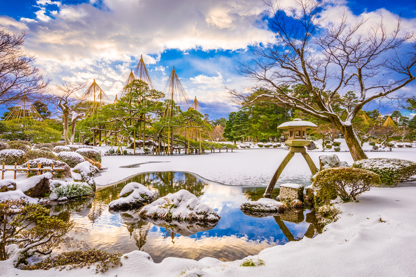
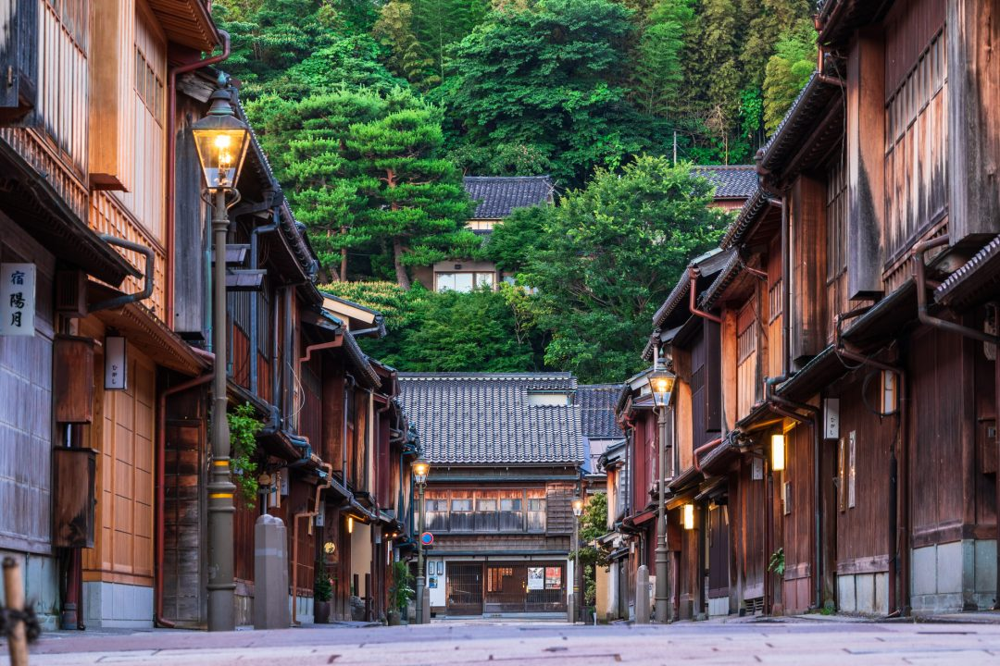

ようこそ金沢へ
兼六園
水戸偕楽園（かいらくえん）、岡山後楽園（こうらくえん） とならぶ日本三名園の一つ、兼六園。兼六園は江戸時代の 代表的な大名庭園として、加賀歴代藩主により、長い歳月をかけて 形づくられてきました。金沢市の中心部に位置し、四季折々の美しさを楽しめる庭園として、 多くの県民や世界各国の観光客に親しまれています。
東茶屋街

金沢文化を代表する茶屋街のひとつ。和の趣を感じるフォトジェニックな写真を撮影するには最適なスポットです。 着物をレンタルした女性観光客が伝統的な町並みをバックに撮影している姿が多く見られます。 また、格式ある割烹や、お洒落な町家カフェ、伝統工芸品を扱うセレクトショップなどが立ち並び、金沢らしいグルメやショッピングが楽しめます。